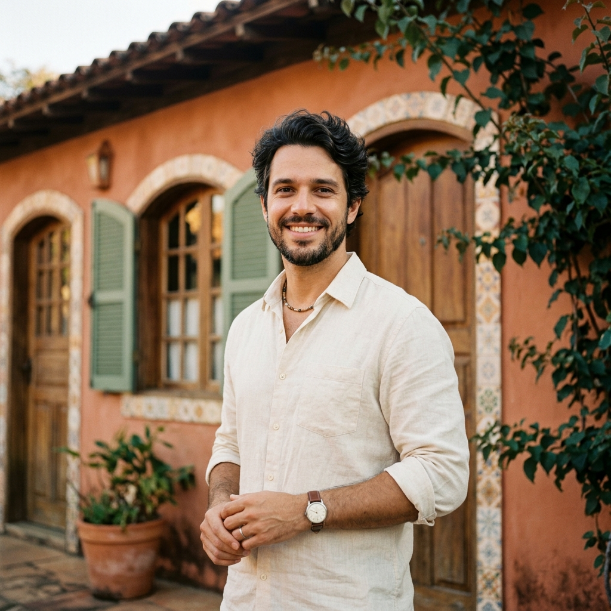

01 — pra começar
Diagnóstico do Lar
Selecione como prefere ser tratada(o) ao longo do diagnóstico.
Mulher

Homem
O diagnóstico leva cerca de 2 minutos.
02 — sobre o seu lar
Você sente que a sua casa te representa hoje?
03 — manutenção
Há quanto tempo a sua casa não recebe uma melhoria intencional?
04 — acolhimento
Quando você chega em casa, sente que ela abraça a sua família?
05 — funcionalidade
A disposição da sua casa funciona pra vida real da sua família?
06 — beleza
A estética da sua casa traz paz visual, ou gera cansaço?
07 — estrutura
A estrutura da sua casa traz segurança, ou você vive apagando incêndios?
08 — refúgio
A sua casa é um verdadeiro refúgio de descanso pra sua família?
09 — seus receios
Qual o seu maior medo na hora de pensar em construir ou reformar?
10 — olhando pra frente
Se nada mudasse na sua casa nos próximos 5 anos, como isso impactaria sua família?
Analisando suas respostas…
Seu diagnóstico está pronto.
Baixe gratuitamente o guia "Os 5 Pilares de uma Casa que Acolhe" e comece a transformação.
Conta pra gente seu nome.
Confere o e-mail, parece incompleto.
Coloca um número com DDD.
Seus dados ficam só com a Casa Bela. Nada de spam.
Presente enviado!
Confira seu e-mail.
Seu guia gratuito acabou de chegar na sua caixa de entrada (dê uma olhadinha no spam também).
Quer dar o próximo passo?
Conheça o material premium com o passo a passo completo para construir com beleza e previsibilidade — o jeito Casa Bela de projetar.
Ver o Guia Completo